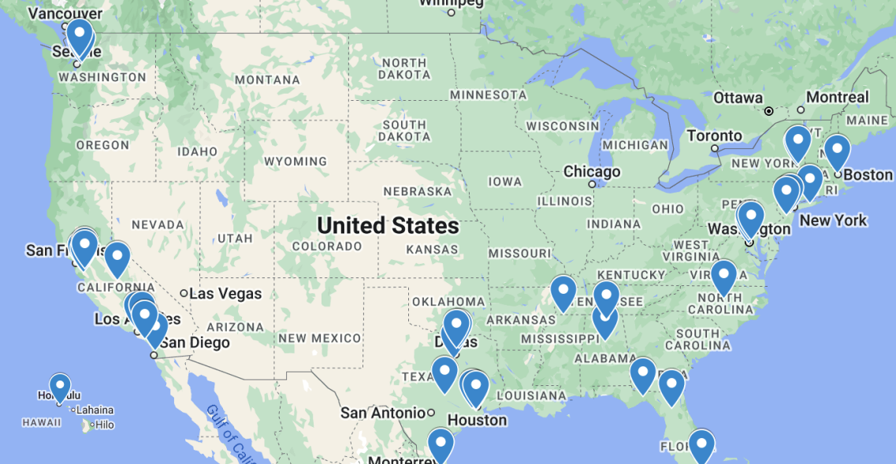

Tournaments / 2025
2025 Invitational
Sunday, January 19, 2025 · Online · First edition

The inaugural 2025 Texas Science Bowl invitational took place on January 19th, 2025. A whopping 75 high school teams registered for the event, 48 of these teams, consisting of over 200 players, were invited to participate in the field. Students from coast to coast participated in the tournament, as shown by the map above.
Through 13 rounds of strenuous competition, 47 teams were sequentially eliminated, leaving just one winning team.
Champion
Mission San Jose High School
- Date
- Sunday, January 19, 2025
- Format
- Online
- Teams
- 48
- Schools
- 40
- Rounds
- 13
- Prize pool
- $1,200
Credits
President
- Benjamin Lin
UT Austin team
- Ravi Adluru
- Param Bajaj
- Thai Bui
- Christina Gu
- Kason Gu
- Swayam Gupta
- Albert Kyi
- Aidan Lai
- Sam Lin
- Jason Nguyen
- Michael Nguyen
- Warith Rahman
- Andy Teng
- Michael Xiang
- Ashley Yang
- Anthony Yang
- Yochen Zhong
2024 West Windsor-Plainsboro High School North Science Bowl Team
- Aldric Benalan
- Krutharth Vaddiyar
- Aprameya Tripathy
- Eric Wang
External writers and playtesters
- Aryan Bora
- Kian Dhawan
- Shreyas Ekanathan
- Edwin He
- Edward Li
- Yunyi Ling
- Aryan Morasa
- Andrey Nikitin
- Ethan Song
- Aashray Chegu Vijay
- Emmanuel Zheng
- David Zhou
Additional moderators
- Boheng Cao
- Alexander Chang
- Harry Jin
- Richard Kao
- Maxwell Kim
- Naveen Mukkatt
- Isaac Nikolayev
- Anagha Ramprasad
- Kanika Rehani
- Anthony Xu